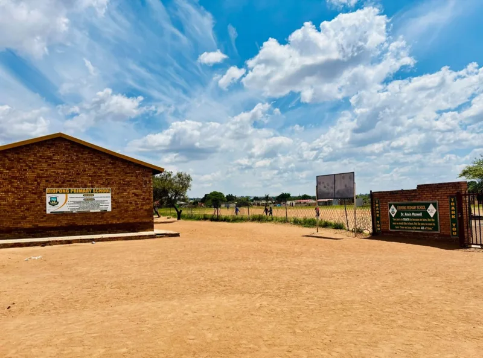
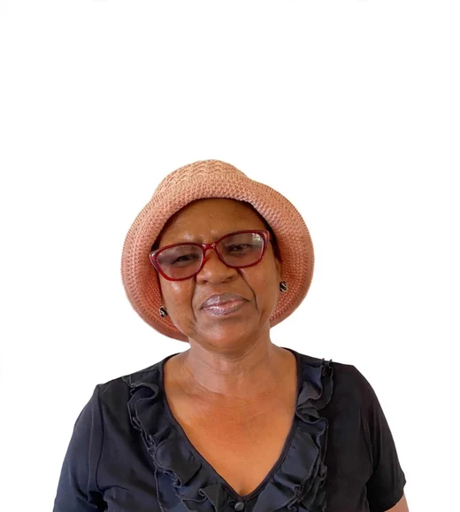
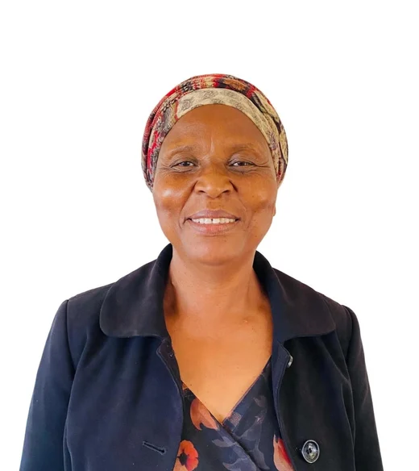

OUR SCHOOL
Rooted in a community.
Focused on learning.
Get to know Diopong Primary School, a public primary school serving the Ga-Makanye community in Limpopo.
Meet our staff
OUR IDENTITY
Education.
The key to a brighter future.
Our school crest and green-and-gold colours connect this digital home to Diopong Primary School.
Diopong at a glance
Diopong is listed by the Department of Basic Education as a public primary school in Ga-Makanye, Ga Mothapo, in the Capricorn South district of Limpopo.
This website brings essential school information and practical learning resources together in a clear, accessible website.
- School name
- Diopong Primary School
- School type
- Public primary school
- Education district
- Capricorn South
- Listed address
- Stand No. 104, Makanye Village, Limpopo
- EMIS number
- 920235734
OUR VISION
Every learner.
A brighter future.
Excellence in delivering inclusive, innovative and transformative quality basic education.
OUR MISSION
How we bring our vision to life
- To strive for excellence in delivering quality and inclusive basic education that empowers every learner to achieve their full potential.
- To provide innovative and transformative curriculum delivery through effective integration of ICT in teaching and learning.
- To promote quality curriculum provision through ICT programmes (such as Kahoot, Plickers, Augmented Reality (AR), and ICT peer teaching) to enhance learner participation and understanding.
- To develop confident, creative, and technologically skilled learners through Coding and Robotics as part of a transformative basic education system.
- To ensure inclusive education through curriculum differentiation, creating equal learning opportunities for all learners by using innovative teaching strategies, differentiated approach and digital resources.
- To foster excellence and quality education by encouraging learner involvement in interactive ICT-based programmes that improve collaboration, problem-solving, and critical thinking skills.
- To equip learners with 21st Century skills through innovative curriculum delivery, Coding and Robotics, and the meaningful use of ICT in the classroom.
WHAT GUIDES US
Our values
- Respect
- Punctuality
- Integrity
- Honesty
- Communication
- Caring
- Non-sexism
- Responsibility
- Hard work
- Tolerance
- Non-discrimination
AROUND DIOPONG
A closer look at our school
Select a photograph to view it at a larger size.





Meet our staff







Information source
Vision, mission, contact details and campus photographs were supplied for this website in November 2026. School identity, district, EMIS number and location are also referenced from the Department of Basic Education’s published school list. This historical listing does not confirm current admissions, staffing or opening hours.
View the Department of Basic Education listing